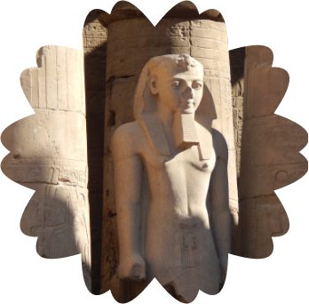
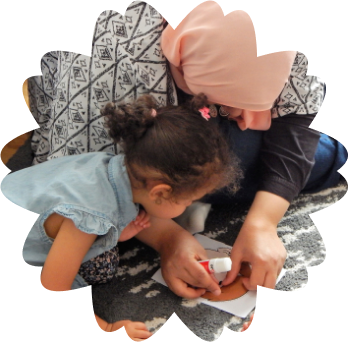
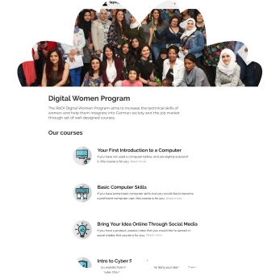

My name is Shohanda and I am from Cairo, Egypt.
I am the eldest sister of five siblings living in Egypt.
I studied Computer Science and after the graduation I worked as a software engineer for four years
where I worked for a SW integrator company. I worked on different projects which required me to know a
lot of things like C language, SQL, PL/SQL, shell scripting,
as well as requiring to understand the business and to deal with clients and support them.


I left the job after my pregnancy. Currently, my daughter is a little over 3 years
old! I decided that I need to look after her closely at least for 3 years during my maternity leave.
In this period I started a small business to sell baby clothes on a web shop.
It was a great experience for me, because I wanted to import lovely clothes for my daughter and at the
same time I could sell them to other customers. I learned a lot; how to match the customers’
needs and how to present products better.

I enjoy designing and making things better.
Back during college when I was working on my graduation project,
I was in charge of User Interface design for app development.
At that time I wanted to learn design more, but
at the same time I wanted to be independent and decided to start working as an engineer straight away..
The reason why we moved to Berlin is for a better life and experience.
My husband is also an engineer specialized in backend development using PHP.
In 2016 he got a job offer from a company in Berlin and moved first to find a home.
Then later my daughter and I moved here.
It was hard at the beginning to get used to a different culture and to learn German.
But after we got in touch with the Egyptian community in Berlin,
many of whom are also working in the IT sector, we could settle our life with their help.
Some of my Egyptian friends in Germany and I managed to make some Arabic activities for our kids so
they don’t forget their mother language and also to learn it in a fun way.


Thinking about design, I love colors and thinking about how to manage them. Although,
I studied the basics of Frontend development as well, I realized that I still wanted to make
layout work, not only coding them. Last summer a friend of mine found a Facebook post from ReDI School
and introduced me to apply for the Graphic Design Fundamentals course.
It allowed me to learn more about topics related to User Experience and User Interface Design.
In the current semester at ReDI, I am attending the UX/UI Design Course and am
learning things like “Persona”. This is a totally new topic for me.
I like learning together with people from different cultures. Also,
I appreciate that teachers always show the best practices in UX and how to make things look good in UI.
In the future, I want to master the German language and start doing freelance projects as a UX/UI
designer. Also I like to cook dessert and want to be professional in it!